C语言
C语言是一门面向过程、抽象化的通用程序设计语言，广泛应用于底层开发。C语言能以简易的方式编译、处理低级存储器。C语言是仅产生少量的机器语言以及不需要任何运行环境支持便能运行的高效率程序设计语言。尽管C语言提供了许多低级处理的功能，但仍然保持着跨平台的特性，以一个标准规格写出的C语言程序可在包括一些类似嵌入式处理器以及超级计算机等作业平台的许多计算机平台上进行编译。
C#语言
C#是一种最新的、面向对象的编程语言。它使得程序员可以快速地编写各种基于Microsoft .NET平台的应用程序，Microsoft .NET提供了一系列的工具和服务来最大程度地开发利用计算与通讯领域。
正是由于C#面向对象的卓越设计，使它成为构建各类组件的理想之选——无论是高级的商业对象还是系统级的应用程序。使用简单的C#语言结构，这些组件可以方便的转化为XML 网络服务，从而使它们可以由任何语言在任何操作系统上通过Internet进行调用。
最重要的是，C#使得C++程序员可以高效的开发程序，而绝不损失C/C++原有的强大的功能。因为这种继承关系，C#与C/C++具有极大的相似性，熟悉类似语言的开发者可以很快的转向C#。
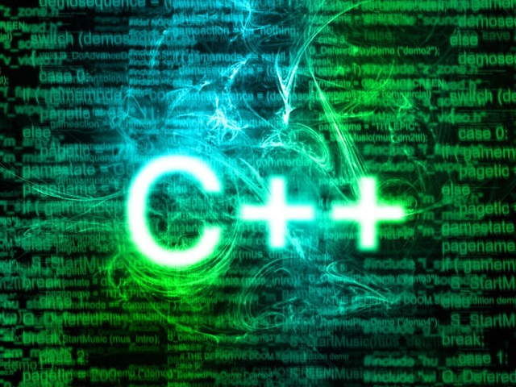
C++语言
C#是一种最新的、面向对象的编程语言。它使得程序员可以快速地编写各种基于Microsoft .NET平台的应用程序，Microsoft .NET提供了一系列的工具和服务来最大程度地开发利用计算与通讯领域。
正是由于C#面向对象的卓越设计，使它成为构建各类组件的理想之选——无论是高级的商业对象还是系统级的应用程序。使用简单的C#语言结构，这些组件可以方便的转化为XML 网络服务，从而使它们可以由任何语言在任何操作系统上通过Internet进行调用。
最重要的是，C#使得C++程序员可以高效的开发程序，而绝不损失C/C++原有的强大的功能。因为这种继承关系，C#与C/C++具有极大的相似性，熟悉类似语言的开发者可以很快的转向C#。
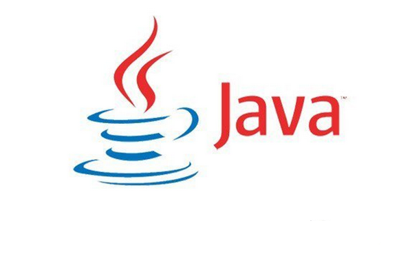
Java语言
Java是一门面向对象编程语言，不仅吸收了C++语言的各种优点，还摒弃了C++里难以理解的多继承、指针等概念，因此Java语言具有功能强大和简单易用两个特征。Java语言作为静态面向对象编程语言的代表，极好地实现了面向对象理论，允许程序员以优雅的思维方式进行复杂的编程 [1] 。
Java具有简单性、面向对象、分布式、健壮性、安全性、平台独立与可移植性、多线程、动态性等特点 [2] 。Java可以编写桌面应用程序、Web应用程序、分布式系统和嵌入式系统应用程序等 [3] 。
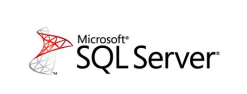
SQL Server数据库
SQL Server 是Microsoft 公司推出的关系型数据库管理系统。具有使用方便可伸缩性好与相关软件集成程度高等优点，可跨越从运行Microsoft Windows 98 的膝上型电脑到运行Microsoft Windows 2012 的大型多处理器的服务器等多种平台使用。
Microsoft SQL Server 是一个全面的数据库平台，使用集成的商业智能 (BI)工具提供了企业级的数据管理。Microsoft SQL Server 数据库引擎为关系型数据和结构化数据提供了更安全可靠的存储功能，使您可以构建和管理用于业务的高可用和高性能的数据应用程序。
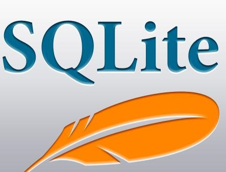
SQLite数据库
SQLite，是一款轻型的数据库，是遵守ACID的关系型数据库管理系统，它包含在一个相对小的C库中。它是D.RichardHipp建立的公有领域项目。它的设计目标是嵌入式的，而且目前已经在很多嵌入式产品中使用了它，它占用资源非常的低，在嵌入式设备中，可能只需要几百K的内存就够了。它能够支持Windows/Linux/Unix等等主流的操作系统，同时能够跟很多程序语言相结合，比如 Tcl、C#、PHP、Java等，还有ODBC接口，同样比起Mysql、PostgreSQL这两款开源的世界著名数据库管理系统来讲，它的处理速度比他们都快。SQLite第一个Alpha版本诞生于2000年5月。 至2015年已经有15个年头，SQLite也迎来了一个版本 SQLite 3已经发布。
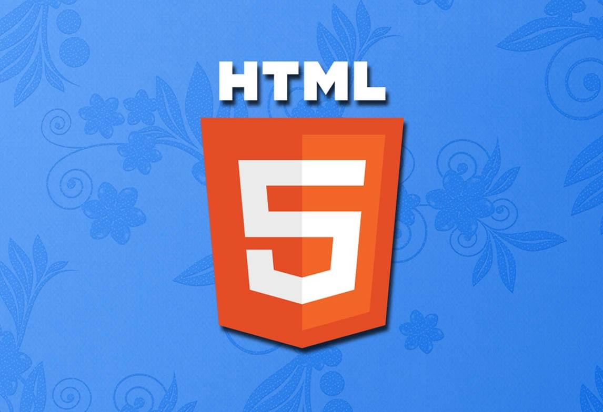
HTML5
HTML5是Web中核心语言HTML的规范，用户使用任何手段进行网页浏览时看到的内容原本都是HTML格式的，在浏览器中通过一些技术处理将其转换成为了可识别的信息。HTML5在从前HTML4.01的基础上进行了一定的改进，虽然在技术人员在开发过程中可能不会将这些新技术投入应用，但是对于该种技术的新特性网站开发技术人员是必须要有所了解的。 [1]
2014年10月29日，万维网联盟宣布，经过接近8年的艰苦努力，该标准规范终于制定完成。 [2]
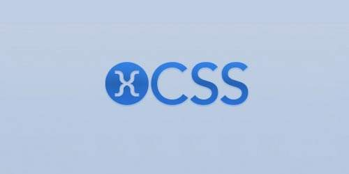
CSS层叠样式表
层叠样式表(英文全称：Cascading Style Sheets)是一种用来表现HTML（标准通用标记语言的一个应用）或XML（标准通用标记语言的一个子集）等文件样式的计算机语言。CSS不仅可以静态地修饰网页，还可以配合各种脚本语言动态地对网页各元素进行格式化。 [1]
CSS 能够对网页中元素位置的排版进行像素级精确控制，支持几乎所有的字体字号样式，拥有对网页对象和模型样式编辑的能力。 [2]
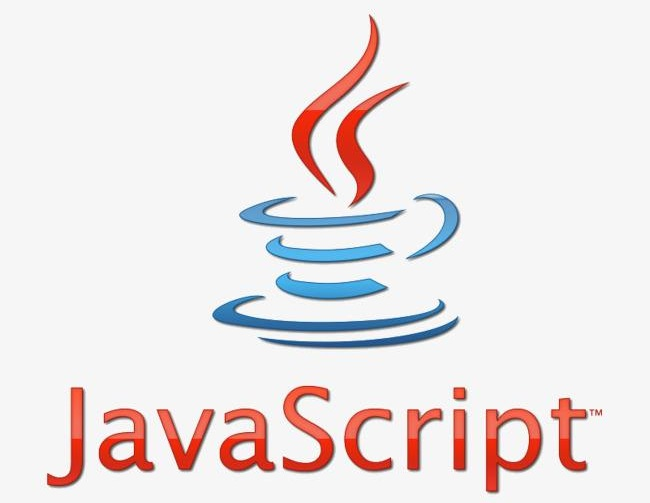
JavaScript脚本语言
JavaScript一种直译式脚本语言，是一种动态类型、弱类型、基于原型的语言，内置支持类型。它的解释器被称为JavaScript引擎，为浏览器的一部分，广泛用于客户端的脚本语言，最早是在HTML（标准通用标记语言下的一个应用）网页上使用，用来给HTML网页增加动态功能。
在1995年时，由Netscape公司的Brendan Eich，在网景导航者浏览器上首次设计实现而成。因为Netscape与Sun合作，Netscape管理层希望它外观看起来像Java，因此取名为JavaScript。但实际上它的语法风格与Self及Scheme较为接近。 [1]
为了取得技术优势，微软推出了JScript，CEnvi推出ScriptEase，与JavaScript同样可在浏览器上运行。为了统一规格，因为JavaScript兼容于ECMA标准，因此也称为ECMAScript。
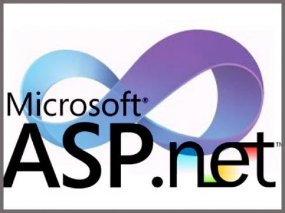
ASP.NET
ASP.NET又称为ASP+，不仅仅是ASP的简单升级，而是微软公司推出的新一代脚本语言。ASP.NET基于.NET Framework的Web开发平台，不但吸收了ASP以前版本的最大优点并参照Java、VB语言的开发优势加入了许多新的特色，同时也修正了以前的ASP版本的运行错误。 [1-2]
ASP.NET具备开发网站应用程序的一切解决方案，包括验证、缓存、状态管理、调试和部署等全部功能。在代码撰写方面特色是将页面逻辑和业务逻辑分开，它分离程序代码与显示的内容，让丰富多彩的网页更容易撰写。同时使程序代码看起来更洁净、更简单。 [2-3]
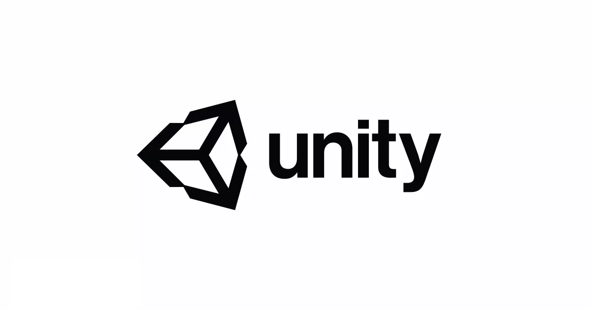
Unity3D游戏开发工具
Unity3D是由Unity Technologies开发的一个让玩家轻松创建诸如三维视频游戏、建筑可视化、实时三维动画等类型互动内容的多平台的综合型游戏开发工具，是一个全面整合的专业游戏引擎。Unity类似于Director,Blender game engine, Virtools 或 Torque Game Builder等利用交互的图型化开发环境为首要方式的软件。其编辑器可运行在Windows、Linux(目前仅支持Ubuntu和Centos发行版)、Mac OS X下，可发布游戏至Windows、Mac、Wii、iPhone、WebGL（需要HTML5）、Windows phone 8和Android平台。也可以利用Unity web player插件发布网页游戏，支持Mac和Windows的网页浏览。它的网页播放器也被Mac 所支持。
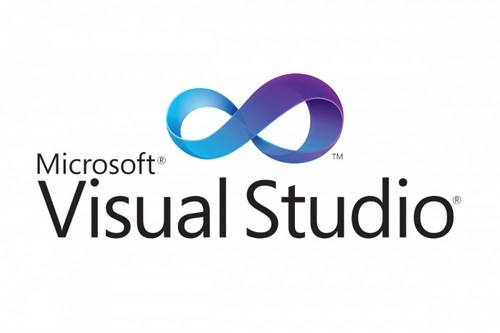
Visual Studio开发工具
Microsoft Visual Studio（简称VS）是美国微软公司的开发工具包系列产品。VS是一个基本完整的开发工具集，它包括了整个软件生命周期中所需要的大部分工具，如UML工具、代码管控工具、集成开发环境(IDE)等等。所写的目标代码适用于微软支持的所有平台，包括Microsoft Windows、Windows Mobile、Windows CE、.NET Framework、.NET Compact Framework和Microsoft Silverlight 及Windows Phone。
Visual Studio是目前最流行的Windows平台应用程序的集成开发环境。最新版本为 Visual Studio 2019 版本，基于.NET Framework 4.5.2 。 [1]
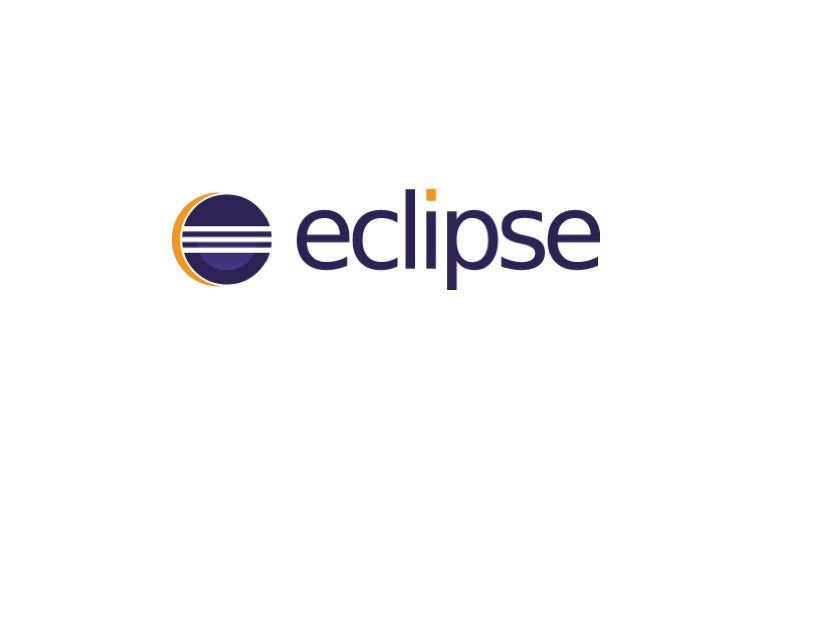
Eclipse开发工具
Eclipse 是一个开放源代码的、基于Java的可扩展开发平台。就其本身而言，它只是一个框架和一组服务，用于通过插件组件构建开发环境。幸运的是，Eclipse 附带了一个标准的插件集，包括Java开发工具（Java Development Kit，JDK）。
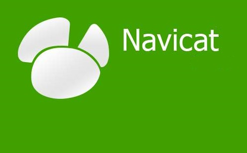
Navicat数据库管理工具
Navicat是一套快速、可靠并价格相当便宜的数据库管理工具，专为简化数据库的管理及降低系统管理成本而设。它的设计符合数据库管理员、开发人员及中小企业的需要。Navicat 是以直觉化的图形用户界面而建的，让你可以以安全并且简单的方式创建、组织、访问并共用信息。
3ds Max
3D Studio Max，常简称为3d Max或3ds MAX，是Discreet公司开发的（后被Autodesk公司合并）基于PC系统的三维动画渲染和制作软件。其前身是基于DOS操作系统的3D Studio系列软件。在Windows NT出现以前，工业级的CG制作被SGI图形工作站所垄断。3D Studio Max + Windows NT组合的出现一下子降低了CG制作的门槛，首先开始运用在电脑游戏中的动画制作，后更进一步开始参与影视片的特效制作，例如X战警II，最后的武士等。在Discreet 3Ds max 7后，正式更名为Autodesk 3ds Max 最新版本是3ds max 2020！
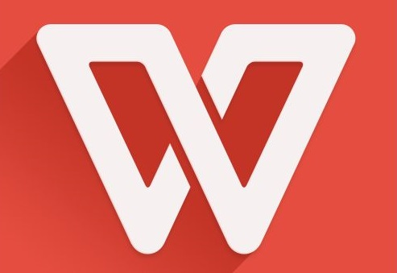
WPS Office
WPS Office是由金山软件股份有限公司自主研发的一款办公软件套装，可以实现办公软件最常用的文字、表格、演示等多种功能。具有内存占用低、运行速度快、体积小巧、强大插件平台支持、免费提供海量在线存储空间及文档模板。
支持阅读和输出PDF文件、全面兼容微软Office97-2010格式（doc/docx/xls/xlsx/ppt/pptx等）独特优势。覆盖Windows、Linux、Android、iOS等多个平台。WPS Office支持桌面和移动办公。且WPS移动版通过Google Play平台，已覆盖超50多个国家和地区。
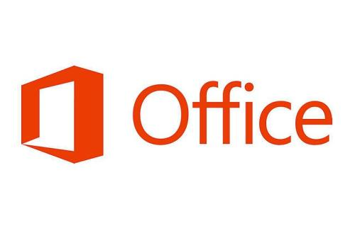
Microsoft Office
Microsoft Office是微软公司开发的一套基于 Windows 操作系统的办公软件套装。常用组件有 Word、Excel、PowerPoint等。最新版本为Office 365(Office 2019)。
2013年3月微软副总裁杰夫·特珀说微软将于今年上半年推出代号为“Oslo”的Office应用，该款应用将支持Windows8、以及搭载了苹果iOS和谷歌Android移动操作系统的智能手机和平板电脑。 [1] 微软将于11月2日在纽约举办Office发布会。 [2]
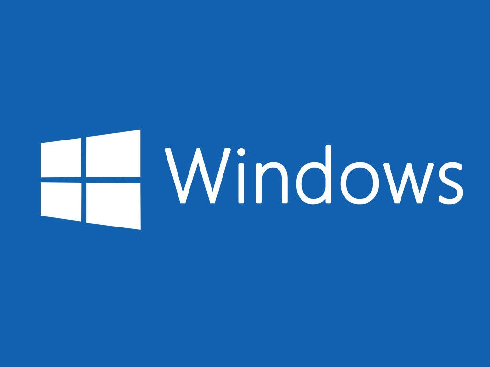
Windows操作系统
Microsoft Windows操作系统是美国微软公司研发的一套操作系统，它问世于1985年，起初仅仅是Microsoft-DOS模拟环境，后续的系统版本由于微软不断的更新升级，不但易用，也慢慢的成为家家户户人们最喜爱的操作系统。

Ubuntu操作系统
Ubuntu（又称乌班图）是一个以桌面应用为主的开源GNU/Linux操作系统，Ubuntu 是基于Debian GNU/Linux，支持x86、amd64（即x64）、ARM和ppc架构，由全球化的专业开发团队（Canonical Ltd）打造的。 [1]
Ubuntu基于Debian发行版和GNOME桌面环境，而从11.04版起，Ubuntu发行版放弃了Gnome桌面环境，改为Unity，与Debian的不同在于它每6个月会发布一个新版本。Ubuntu的目标在于为一般用户提供一个最新的、同时又相当稳定的主要由自由软件构建而成的操作系统。Ubuntu具有庞大的社区力量，用户可以方便地从社区获得帮助。 [3] Ubuntu对GNU/Linux的普及特别是桌面普及作出了巨大贡献，由此使更多人共享开源的成果与精彩。